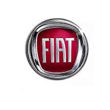
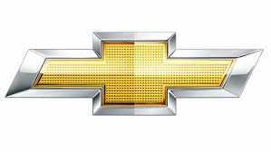
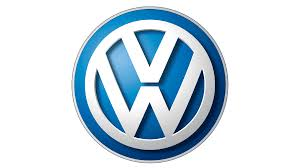
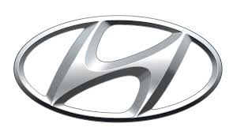
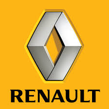

Marcas Populares e de Grande Volume
São as marcas que você mais vê na rua, focadas em custo-benefício, manutenção acessível e versatilidade.

Fiat
ItáliaA Fiat, sigla para Fabbrica Italiana Automobili Torino, foi fundada em Turim em 1899 por Giovanni Agnelli e consolidou-se como uma das marcas mais tradicionais do setor automotivo global. Ao longo de sua história, a empresa expandiu suas operações para além da Itália, tornando-se uma peça-chave no mercado internacional. Atualmente, a Fiat integra o grupo Stellantis, um dos maiores conglomerados automotivos do mundo, que reúne marcas de peso como Jeep, Peugeot, Citroën e RAM, o que confere à marca italiana uma robusta sinergia tecnológica e comercial.
No Brasil, a trajetória da Fiat começou em 1976 com a inauguração da fábrica de Betim, em Minas Gerais, transformando profundamente a cultura automotiva do país. A marca se destacou historicamente pela ousadia e pioneirismo em inovação local, sendo responsável pelo lançamento do Fiat 147, o primeiro carro movido a etanol produzido em série no mundo, e pelo Uno Mille nos anos 1990, modelo que praticamente inaugurou e popularizou o segmento de motores 1.0 no mercado nacional. Essa capacidade de entender as demandas do consumidor brasileiro garantiu à empresa a liderança de vendas em diversos períodos.
A força atual da marca se concentra na versatilidade de seu portfólio, que transita com sucesso entre veículos compactos e utilitários. A Fiat domina o segmento de picapes com a Strada e a Toro, modelos que redefiniram suas categorias e frequentemente ocupam o topo dos rankings de emplacamentos no país. Além disso, a empresa tem atualizado sua linha com SUVs competitivos, como o Pulse e o Fastback, e iniciou a transição para a eletrificação com a introdução de sistemas híbridos leves em seus principais modelos, buscando alinhar a eficiência energética às novas exigências de sustentabilidade do mercado global.

Chevrolet
EUAA Chevrolet, carinhosamente apelidada de Chevy e controlada pela gigante General Motors (GM), é uma das marcas automobilísticas mais emblemáticas do mundo. Fundada em 1911 pelo piloto de corridas Louis Chevrolet e pelo empresário William C. Durant nos Estados Unidos, a marca nasceu com a missão de oferecer veículos que aliassem desempenho e acessibilidade. Ao longo de mais de um século, a empresa se transformou no coração da GM, tornando-se um símbolo cultural global e estabelecendo uma forte presença em diversos continentes, com um foco muito claro na robustez e na liderança de mercado.
No cenário brasileiro, a história da Chevrolet começou muito cedo, em 1925, inicialmente montando veículos em galpões no bairro do Ipiranga, em São Paulo, antes de se consolidar definitivamente em São Caetano do Sul. A marca moldou a história das ruas brasileiras com verdadeiros ícones culturais, como o Opala, que uniu o luxo americano à mecânica confiável por mais de duas décadas, e o Chevette, um dos carros mais vendidos do país nos anos 80. Posteriormente, a linha Corsa nos anos 90 e o fenômeno Celta nos anos 2000 ditaram as regras dos carros populares, reforçando o vínculo emocional da fabricante com as famílias do país.
Atualmente, a Chevrolet mantém uma posição de grande relevância no mercado nacional, sustentada principalmente pelo sucesso da família Onix, que revolucionou o segmento de compactos ao democratizar tecnologias como a conectividade Wi-Fi nativa e a central multimídia MyLink. Além do Onix e do Onix Plus, a marca tem focado fortemente na renovação de sua linha de utilitários esportivos e picapes, destacando-se com o Tracker, a Nova Montana e a tradicional S10. Alinhada com as diretrizes globais da General Motors, a Chevrolet também lidera um movimento progressivo em direção à eletrificação, investindo em uma nova frota de veículos totalmente elétricos para o futuro da mobilidade brasileira.

Volkswagen
AlemanhaA Volkswagen, cujo nome significa "carro do povo" em alemão, foi fundada em 1937 em Wolfsburg, na Alemanha, com o objetivo inicial de criar um veículo acessível, confiável e de produção em massa para as famílias do país. Sob a liderança do engenheiro Ferdinand Porsche, nasceu o icônico Fusca, modelo que não apenas estabeleceu as bases da empresa, mas também se tornou um dos carros mais vendidos e reconhecidos da história global. Hoje, o Grupo Volkswagen é um colosso automotivo mundial, controlando uma constelação de marcas prestigiadas que inclui Audi, Porsche, Lamborghini,
No Brasil, a relação com a Volkswagen é profunda e confunde-se com o próprio processo de industrialização do país, iniciado na década de 1950 com a montagem do Fusca e da Kombi no bairro do Ipiranga, em São Paulo, antes da inauguração da histórica fábrica de São Bernardo do Campo. A marca alemã dominou as ruas brasileiras por décadas através de uma reputação de robustez mecânica e facilidade de manutenção. O maior símbolo dessa soberania foi o Gol, que sucedeu o Fusca e manteve o posto de veículo mais vendido do Brasil por 27 anos consecutivos, tornando-se uma instituição cultural sobre rodas.
Atualmente, a Volkswagen passa por uma grande reformulação estratégica no mercado brasileiro, abandonando progressivamente o foco exclusivo em hatches populares para se consolidar como referência no segmento de utilitários esportivos, com modelos de grande sucesso comercial como T-Cross, Nivus e Taos. A picape Saveiro e o hatch Polo mantêm a forte presença da marca nas categorias de entrada e comerciais leves. Globalmente e localmente, a empresa direciona massivos investimentos para a sua linha de veículos totalmente elétricos e híbridos, batizada de ID, pavimentando o caminho para um futuro focado na descarbonização e na conectividade digital.

Hyundai
Coreia do SulA Hyundai Motor Company foi fundada em 1967 em Seul, na Coreia do Sul, por Chung Ju-yung, inicialmente como uma extensão de sua empresa de construção civil. O nome da marca significa "modernidade" em coreano, um reflexo direto de sua filosofia de crescimento acelerado e constante evolução tecnológica. Diferente de concorrentes centenárias, a Hyundai construiu sua reputação global em tempo recorde, deixando de ser uma fabricante de carros econômicos de baixo custo para se transformar em um dos maiores e mais respeitados conglomerados automotivos do planeta, famoso pelo design ousado e pela liderança em engenharia.
No mercado brasileiro, a trajetória da Hyundai divide-se em dois capítulos muito claros e bem-sucedidos. O primeiro consolidou-se através da parceria com o Grupo CAOA, que a partir do final dos anos 90 importou e posteriormente passou a fabricar em Goiás modelos que viraram febre de status e robustez, como os SUVs Tucson, ix35 e Santa Fe, além dos caminhões leves HR. O segundo capítulo iniciou-se em 2012, quando a matriz sul-coreana se instalou oficialmente em Piracicaba, no interior de São Paulo, para produzir o HB20, um compacto desenvolvido exclusivamente para as exigências do consumidor local que rapidamente se tornou um dos maiores fenômenos de vendas da história automotiva do país.
Atualmente, a Hyundai mantém uma posição de grande prestígio no Brasil, ancorada pelo sucesso contínuo da família HB20 e pela forte presença do Creta, que figura constantemente entre os SUVs mais vendidos do mercado nacional. Recentemente, a marca assumiu o controle total de suas operações comerciais e de importação no país, unificando a rede de concessionárias para acelerar a introdução de portfólios globais mais tecnológicos. Alinhada com as tendências de sustentabilidade, a empresa foca agora na expansão de sua linha de veículos híbridos e elétricos de última geração, consolidando sua imagem de inovação tecnológica e sofisticação no cenário automotivo atual.

Renault
FrançaA Renault foi fundada em 1899 pelos irmãos Louis, Marcel e Fernand Renault em Boulogne-Billancourt, na França, consolidando-se rapidamente como um dos pilares da indústria automobilística europeia. Desde as suas origens, a marca se destacou pelo forte espírito de engenharia e inovação, introduzindo soluções mecânicas que se tornaram padrão na indústria, além de construir um histórico vitorioso nas pistas de Fórmula 1. Atualmente, a empresa lidera a Aliança Renault-Nissan-Mitsubishi, uma das maiores parcerias automotivas globais, o que permite o compartilhamento de plataformas, motores e tecnologias de ponta em escala mundial.
No mercado brasileiro, a trajetória da Renault ganhou força em 1998 com a inauguração do Complexo Ayrton Senna em São José dos Pinhais, no Paraná, marcando o início de sua produção nacional. Inicialmente reconhecida pelo requinte e segurança de modelos europeus como o Mégane e o Scénic — este último o pioneiro no segmento de minivans no país —, a marca passou por uma grande virada estratégica nos anos 2000. Ao nacionalizar a linha de veículos de origem Dacia, como o Logan e o Sandero, a Renault conquistou o consumidor local através da oferta de carros robustos, com amplo espaço interno e excelente custo-benefício.
Atualmente, a Renault vive um momento de profunda transformação no Brasil, buscando elevar o posicionamento da marca com produtos de maior valor agregado e tecnologia. O portfólio atual destaca o sucesso do SUV compacto Kardian, que estreou uma nova plataforma global e motores turbo modernos no país, além do Duster, que mantém sua fama de robustez. Pioneira na eletrificação no mercado nacional com o pioneiro Zoe e o Kwid E-Tech, a fabricante francesa direciona seus novos investimentos para consolidar uma linha de utilitários esportivos tecnológicos e veículos sustentáveis para o futuro da mobilidade na América Latina.